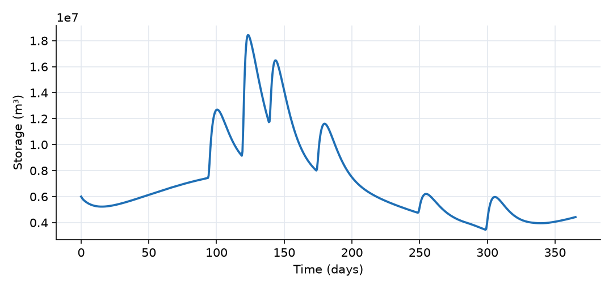
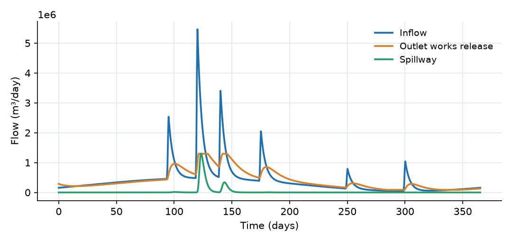

What this model represents
A dam stores water in the wet season and releases it through the year for water supply and to keep a minimum flow in the river downstream. The operator divides the reservoir volume into zones and sets the release according to which zone the storage is in. This is the simplest form of a reservoir operating rule (a rule curve), and it is how many planning models represent reservoir operation.
The model follows one reservoir through a synthetic year with a wet season around day 120 and a long dry season afterwards. It shows how a rule tied to storage attenuates floods, carries water over into the dry season, and protects a minimum release when inflows are low.
How it works
Reservoir. The reservoir is a single storage S (m³) with the mass balance
dS/dt = Q_in(t) − Q_release − Q_spill
where Q_in is read from reservoir_inflow.csv.
Outlet works (operating rule). The release depends only on the current storage, in three zones:
| Zone | Storage | Release |
|---|---|---|
| Below the conservation zone | S < S_min | Q_min |
| Conservation zone | S_min < S < S_max | Q_min + (S − S_min)/(S_max − S_min) · (Q_max − Q_min) |
| Flood zone | S > S_max | Q_max |
With S_min = 4 × 10⁶ m³, S_max = 16 × 10⁶ m³, Q_min = 1 m³/s and Q_max = 15 m³/s, the release in the conservation zone rises by 1.17 m³/s for every million m³ of storage. Q_min plays the role of an environmental or downstream supply release. Q_max is the capacity of the outlet works. The release is reduced automatically only if the reservoir is about to empty, so that storage cannot become negative.
Spillway. The spillway link uses a power-law rating in storage:
Q_spill = c · S^p, c = 8.44 × 10⁻⁸², p = 12
with S in m³ and Q in m³/day. The coefficient is chosen so that Q_spill = 40 m³/s at S = 20 million m³. With an exponent this high the rating acts like an overflow crest: it passes less than 0.001 m³/s at 8 million m³, 2.8 m³/s at S_max, and grows rapidly above that. The link has no explicit crest, so it is never exactly zero.
Downstream river. Both links discharge to a fixed-level boundary. Neither link depends on the water level downstream, so the boundary only collects the released volume.
Sign convention and units. Both links are positive from the reservoir to the river. Flows are in m³/day (1 m³/s = 86,400 m³/day), storage in m³, time in days.
What to look for in the results
- Start of the year. At 6 million m³ the rule releases 3.3 m³/s, more than the 1.8 m³/s inflow, so storage first drops to about 5.2 million m³ (day 15) before the rising base flow brings it back up.
- Flood attenuation. The largest storm brings 63 m³/s at day 120. Storage climbs above S_max on day 121 and peaks at 18.4 million m³ on day 123. The outlet works release their maximum of 15 m³/s and the spillway adds up to 15 m³/s, so the peak outflow is 30 m³/s, about half of the peak inflow. Storage is in the flood zone from day 121 to 129 and again from day 142 to 146, after the third storm.
- Conservation zone. Between the storms the release follows storage along the straight line of the rule, so it falls gradually as the reservoir drains and keeps the downstream river well above the minimum.
- Dry season. From day 284 to 300, and again from day 333 to 346, storage is below S_min = 4 million m³ and the release is held at Q_min = 1 m³/s, more than the inflow (as low as 0.51 m³/s). The minimum release continues to draw the reservoir down, to a low of 3.44 million m³ on day 299. The small storms on days 250 and 300 lift the storage only briefly.
- Annual balance. Over the year 157 million m³ flows in, 149 million m³ leaves through the outlet works and 9.4 million m³ over the spillway, and storage ends 1.6 million m³ lower than it started.
Assumptions and limitations
- The reservoir has no stage-storage-area relationship, so there is no reservoir water level and no evaporation, seepage or direct rainfall on the water surface.
- The rule depends on storage only. Real rule curves usually change with the season (a lower flood-zone limit in the wet season, for example) and may also depend on forecasts or downstream conditions, which this link does not represent.
- The release changes instantly with storage. Real gate operation happens in discrete steps.
- The spillway rating is a smooth power law in storage, not a weir equation with a crest elevation. Its parameters were chosen for this illustration.
- Downstream water levels do not affect either release.
- The inflow series is synthetic.
Model diagram
Hover a block or link to see its name and type. Arrows show the positive flow direction.
Components
Click a component to see every property set in the model file, with units and meaning.
Blocks 2
Storage compartments: each holds water (and dissolved or particulate mass) and has a state that evolves in time.
ReservoirReservoir · Reservoir_operationA storage reservoir with a volume of 6 million m³ at the start of the year. It is described by its stored volume only (no elevation or surface area). Receives the inflow from reservoir_inflow.csv.
reservoir_inflow.csv.Reservoir: Reservoir
| Property | Value | Unit | Meaning |
|---|---|---|---|
| Initial Storage | 6000000 | m3 | Initial volume of water stored in the reservoir at the beginning of the simulation. |
| Flow rate time series | reservoir_inflow.csv | Time series representing the flow rate entering the reservoir. |
Downstream_Riverfixed_headThe river below the dam. A boundary that receives both releases. Its storage is the cumulative volume released.
fixed_head: Fixed-head boundary
| Property | Value | Unit | Meaning |
|---|---|---|---|
| Head | 0 | m | |
| Initial Storage | 0 | m3 |
Links 2
Connections that move water (and the mass it carries) between blocks.
Outlet_WorksReservoir_link_ruleThe controlled release (gates or valves in the outlet works). Release follows the operating rule with S_min = 4 million m³, S_max = 16 million m³, Q_min = 1 m³/s (86,400 m³/day) and Q_max = 15 m³/s (1,296,000 m³/day).
Reservoir_link_rule: Reservoir outflow with a rule-based flow
| Property | Value | Unit | Meaning |
|---|---|---|---|
| Minimum storage | 4000000 | m3 | |
| Maximum storage | 16000000 | m3 | |
| Minimum flow | 86400 | m3/day | |
| Maximum flow | 1296000 | m3/day |
SpillwaySpillway · Reservoir_operationUncontrolled overflow represented by a steep power-law rating in storage, Q = c·S^12. Negligible at normal storage, it grows quickly once the reservoir rises above S_max.
Spillway: Reservoir spillway
| Property | Value | Unit | Meaning |
|---|---|---|---|
| Reservoir rating curve coefficient | 8.44e-82 | ||
| Reservoir rating curve power | 12 |
Input files
reservoir_inflow.csv | Inflow to the reservoir over one year. A seasonal base flow between 0.5 and 5.5 m³/s (highest around day 120) plus six storm events with peaks of 25, 60, 35, 20, 8 and 12 m³/s on days 95, 120, 140, 175, 250 and 300, each with a one-day rise and a 4-day exponential recession. Time in days, flow in m³/day, every 0.25 day. Synthetic. |
Simulation settings
| Start time | 0 |
| End time | 365 |
| Initial time step | 0.01 |
| Write interval (steps) | 1 |
Results
Produced by running the downloaded model unchanged.

